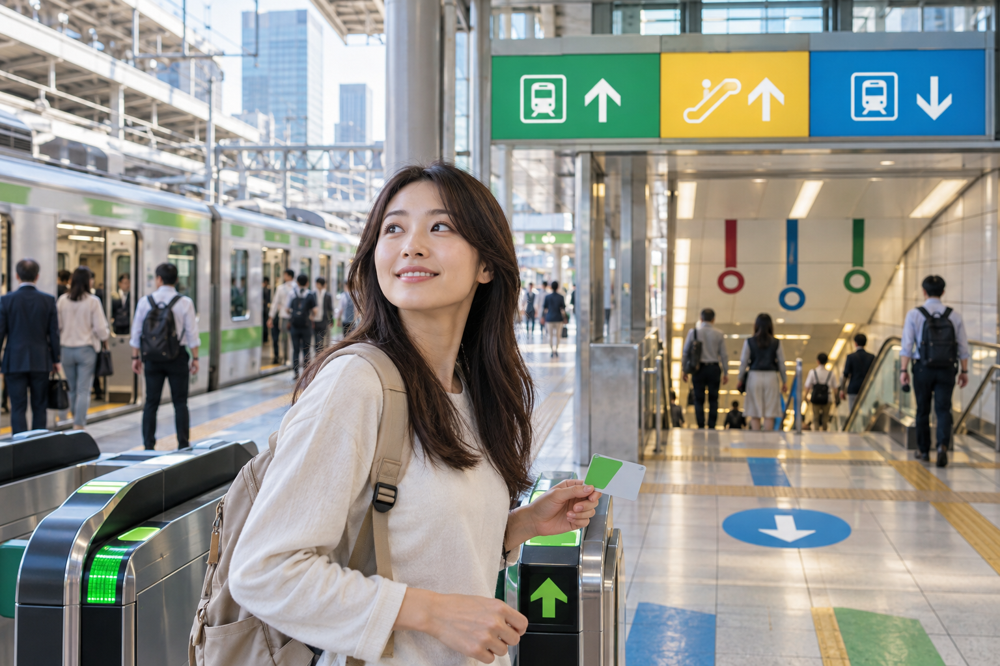
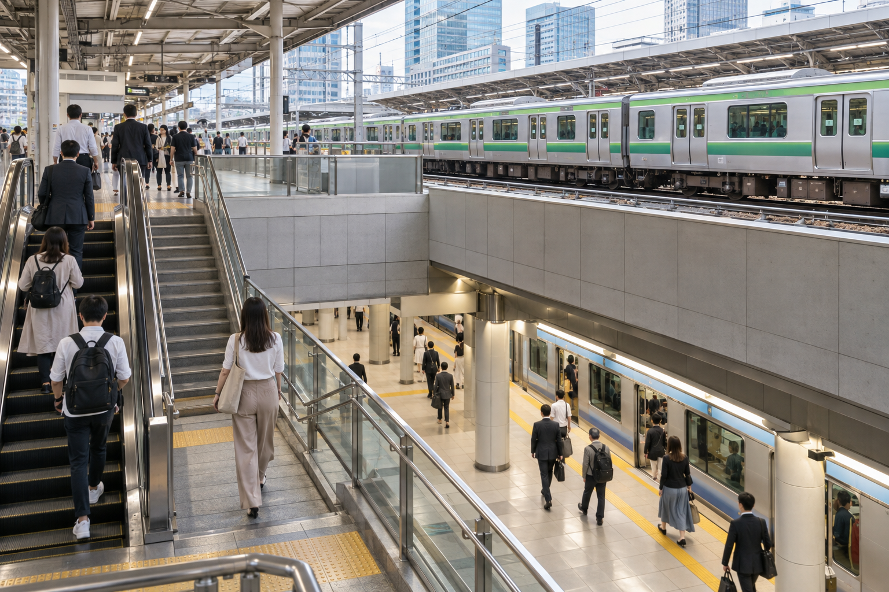
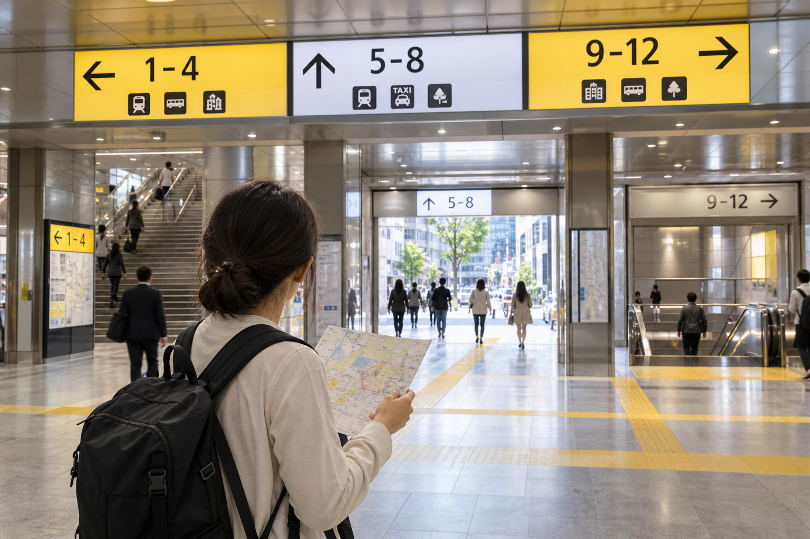

How to Get Around Tokyo: Subway, Trains and Transport
Tokyo's transport map can look overwhelming before your first trip. JR trains, Tokyo Metro, Toei Subway, private railways, buses, monorails, and airport services all appear to overlap. The good news is that you do not need to learn the whole network before you arrive.
For most first-time visitors, getting around Tokyo comes down to a simple routine: search your destination, follow the suggested line, check the train direction, tap through the gate, and use the correct exit at the other end. A rechargeable IC card makes this even easier because you usually do not need to calculate individual local fares.
This guide explains how Tokyo's local transport system works, when to use JR trains or the subway, how transfers and station numbers work, which tickets can save money, and how to avoid common first-time mistakes. Long-distance trains, Shinkansen travel, and nationwide rail planning are covered separately.
Tokyo Transport at a Glance

| Transport | Best For | First-Time Use |
|---|---|---|
| JR trains | Major districts and above-ground routes | Very useful |
| Tokyo Metro | Central Tokyo sightseeing | Very useful |
| Toei Subway | Filling gaps across central Tokyo | Very useful |
| Private railways | Outer neighborhoods and routes beyond central Tokyo | Useful when your route n eeds them |
| Buses | Places less convenient by rail | Useful, but usually secondary |
| Taxi | Short difficult transfers, late nights, luggage | Useful selectively |
| Walking | Exploring individual neighborhoods | Essential |
| IC card | Paying local fares | Recommended |
| Tokyo Subway Ticket | Heavy Metro + Toei use | Can save money on the right itinerary |
For a normal first Tokyo trip, expect to use a combination of:
trains + subway + walking
rather than choosing one transport system for the entire stay.
Is Tokyo Public Transport Difficult to Use?
It looks harder than it actually is.
The main challenge is that Tokyo does not have one single railway company.
Different parts of the network are operated by different companies.
You may use:
JR East in the morning
then:
Tokyo Metro in the afternoon
then:
Toei Subway in the evening
That is normal.
You do not need separate knowledge for every operator before traveling.
A compatible IC card removes much of the payment confusion.
The Three Systems First-Time Visitors Should Understand
The most important networks for central Tokyo are:
- ✓JR East
- ✓Tokyo Metro
- ✓Toei Subway
Once you understand the difference between these three, the map becomes much easier.
What Is JR in Tokyo?
JR East operates many above-ground railway lines through Tokyo.
These are part of the wider Japan Railways network, but within Tokyo they function as everyday city transport too.
Useful JR stations include:
- ✓Tokyo
- ✓Shinjuku
- ✓Shibuya
- ✓Ueno
- ✓Akihabara
- ✓Shinagawa
- ✓Ikebukuro
This makes JR useful for many first-time sightseeing routes.
The JR Yamanote Line
The Yamanote Line is one of the most useful lines for visitors.
It forms a loop around many major parts of central Tokyo.
Important stops include:
- ✓Tokyo
- ✓Ueno
- ✓Akihabara
- ✓Ikebukuro
- ✓Shinjuku
- ✓Shibuya
- ✓Shinagawa
You will probably use it at some point during a first trip.
But do not make the mistake of thinking:
“I should use the Yamanote Line for everything.”
Sometimes the subway provides a much faster or more direct route.
When JR Is Usually Useful
JR often works well when traveling between major hubs such as:
- ✓Shinjuku and Shibuya
- ✓Shibuya and Shinagawa
- ✓Tokyo and Ueno
- ✓Ueno and Akihabara
- ✓Tokyo and Shinjuku
The exact best route changes based on your starting point.
Always check the route rather than automatically choosing JR.
Other Useful JR Lines in Tokyo
You may also encounter lines such as:
- ✓Chuo Line
- ✓Chuo-Sobu Line
- ✓Keihin-Tohoku Line
- ✓Saikyo Line
- ✓Shonan-Shinjuku Line
You do not need to memorize them.
Your route app will tell you when one is useful.
The important point is that JR in Tokyo is much more than the Yamanote Line.
Is the Japan Rail Pass Useful for Tokyo Transport?
A nationwide Japan Rail Pass can be used on eligible JR services while it is valid.
But I would not buy a national JR Pass simply to travel around Tokyo.
Tokyo sightseeing uses a mixture of:
- ✓JR
- ✓Tokyo Metro
- ✓Toei
- ✓Private railway services
A nationwide pass does not automatically cover all of those.
The full value decision belongs in Japan Rail Pass: Is the JR Pass Worth It?
For local Tokyo planning, use the fare method that best fits your actual journeys.
What Is Tokyo Metro?
Tokyo Metro operates the largest subway network in central Tokyo.
It currently has 9 lines.
These include:
- ✓Ginza Line
- ✓Marunouchi Line
- ✓Hibiya Line
- ✓Tozai Line
- ✓Chiyoda Line
- ✓Yurakucho Line
- ✓Hanzomon Line
- ✓Namboku Line
- ✓Fukutoshin Line
You do not need to memorize these names before arrival.
Each line has:
- ✓A name
- ✓A color
- ✓A letter code
That makes navigation easier.
Tokyo Metro Station Numbers
Tokyo Metro stations use letters and numbers.
For example, a station may be shown with:
G
for the Ginza Line,
followed by a station number.
This system is very useful if:
- ✓Japanese station names are unfamiliar
- ✓Two station names sound similar
- ✓You want to check direction
- ✓You want to count stops
Instead of remembering only a long station name, you can also follow its:
line letter + station number
Why Line Colors Help
Each subway line has its own color.
Station signs, maps, and platform information use those colors.
When changing trains, follow:
- ✓Line name
- ✓Line color
- ✓Letter code
- ✓Station number
Do not rely on color alone.
Learning the letter and line name gives you a safer backup.
When Tokyo Metro Is Better Than JR
Tokyo Metro can be better when:
- ✓There is no convenient JR route
- ✓Your destination sits between major JR hubs
- ✓The subway provides a direct connection
- ✓You want to avoid unnecessary looping on the Yamanote Line
For example, many areas in central Tokyo are reached more naturally by subway than JR.
This is why I recommend using the route that is best for that specific trip, not choosing one operator for your whole holiday.
What Is Toei Subway?
Tokyo's second main subway operator is Toei Transportation.
Toei operates four subway lines:
- ✓Asakusa Line
- ✓Mita Line
- ✓Shinjuku Line
- ✓Oedo Line
The network is separate from Tokyo Metro, even though both function as Tokyo subways.
That distinction affects:
- ✓Individual tickets
- ✓Some passes
- ✓Fare calculations
For a tourist using a compatible IC card, however, the difference is usually much easier to manage.
Why First-Time Visitors Get Confused by Tokyo Metro and Toei?
A map may make the entire subway system look like one network.
Operationally, it is not.
For example:
Tokyo Metro ticket
does not automatically mean:
unlimited Toei Subway travel
unless the specific ticket says it covers both.
This matters most when buying day passes.
With an IC card, you can normally tap through compatible services without worrying about buying separate paper fares before each ride.
Useful Toei Lines for Visitors
You do not need to memorize all four, but certain lines often appear in tourist routes.
Asakusa Line
Can be useful around areas such as:
- ✓Asakusa
- ✓Higashi-Ginza
- ✓Shimbashi
Some services also continue onto connecting railway networks toward airport routes.
Oedo Line
The Oedo Line reaches many useful areas and forms a broad loop through parts of Tokyo.
It can be helpful for places not directly served by JR.
Shinjuku Line
Useful across several central and eastern areas, depending on your route.
Mita Line
Can be useful for selected central Tokyo journeys.
Again, let your route app decide when one of these lines is better.
JR vs Tokyo Metro vs Toei: Which Should You Use?

Use whichever gives you the best journey.
Do not approach Tokyo transport like this:
“I bought a Suica, so I should use JR.”
Suica is a payment card, not a rule that limits you to JR.
For example:
Use JR When:
- ✓It provides a direct major-station connection
- ✓You are moving along an easy Yamanote route
- ✓Your hotel is beside a useful JR station
Use Tokyo Metro When:
- ✓It provides a more direct central-city route
- ✓Your destination has a nearby Metro station
- ✓It avoids a longer JR loop
Use Toei When:
- ✓A Toei line is the simplest route
- ✓Your destination sits conveniently on one of its four lines
The best first-time strategy is:
Follow the most practical route, regardless of operator.
What About Private Railways?
Tokyo also has several private railway companies.
You may encounter them when traveling:
- ✓To western Tokyo
- ✓To outer neighborhoods
- ✓Toward nearby prefectures
- ✓To selected airports
- ✓To certain day-trip destinations
Examples of private operators around greater Tokyo include:
- ✓Tokyu
- ✓Keio
- ✓Odakyu
- ✓Keikyu
- ✓Keisei
- ✓Tobu
- ✓Seibu
You do not need to study all of them before your trip.
They become relevant when your route uses them.
Through Services Can Make the Operator Look Confusing
Sometimes a train continues from one company's tracks onto another company's network.
You may stay on the same physical train even though the operating line changes.
This is normal around Tokyo.
Do not panic if the line name or operator changes during a through-service.
Follow:
- ✓Destination
- ✓Train service
- ✓Route app
- ✓Station information
A compatible IC card also makes these journeys easier because the fare system handles the payment when you tap correctly.
Should You Use Suica, PASMO or ICOCA in Tokyo?
Yes, a compatible IC card is one of the easiest ways to pay for local Tokyo transport.
Common cards include:
- ✓Suica
- ✓PASMO
- ✓ICOCA
If you already have ICOCA from Osaka or Kyoto, you generally do not need to buy a separate Tokyo card.
Major interoperable IC cards work across many compatible Tokyo rail and subway services.
How an IC Card Works in Tokyo
For most local rail journeys:
- ✓Tap at the entry gate.
- ✓Take the train.
- ✓Transfer if required.
- ✓Tap at the final exit.
- ✓The applicable fare is deducted.
You do not normally need to calculate the fare first.
This is one of the main reasons I recommend an IC card for first-time visitors.
Always Use the Same Card or Device
If you enter using:
physical Suica
exit with that same card.
If you enter using:
Suica on your phone
use the same device when exiting.
Do not switch between:
- ✓Physical card
- ✓Phone
- ✓Another IC card
during the same rail journey.
What If Your IC Card Balance Is Too Low?
If you cannot leave because your balance is insufficient, do not worry.
You can usually:
- ✓Recharge the card
- ✓Use a fare-adjustment machine
- ✓Ask station staff
Then complete the exit.
Do You Need More Than One IC Card?
Usually no.
One compatible card is enough for most normal Tokyo sightseeing.
Owning both Suica and PASMO does not make your city travel easier.
Our IC Cards in Japan: Suica, PASMO and ICOCA Explained covers physical cards, mobile cards, tourist versions, recharge rules, and refunds in detail.
This Tokyo page only needs one takeaway:
Use one compatible IC card for most everyday fares.
Can You Use Paper Tickets Instead?
Yes.
Every traveler does not need an IC card.
You can buy regular tickets from station machines.
For a normal ticket:
- ✓Check the fare.
- ✓Buy the ticket.
- ✓Insert it into the entry gate.
- ✓Take it back from the gate.
- ✓Keep it during the journey.
- ✓Insert it again when leaving.
The exit gate normally keeps the completed ticket.
When Paper Tickets Can Still Be Useful
Paper tickets can make sense if:
- ✓You do not have an IC card
- ✓You are making very few journeys
- ✓Your card is not working
- ✓A specific fare product requires another ticket
But for several days of Tokyo sightseeing, an IC card usually reduces friction.
How to Find the Right Train
Do not look only at the line.
You also need the direction.
A railway line serves trains in both directions.
Before boarding, check:
- ✓Line name
- ✓Platform
- ✓Destination
- ✓Direction
- ✓Major stations listed on the sign
Your route app normally gives you this information.
Use Major Station Names to Confirm Direction
Suppose your route says you need a line toward a particular end station.
The platform sign may list:
for Shibuya / Shinjuku
or another major direction.
Use those station names to confirm you are on the correct side.
Station Numbers Can Confirm Your Direction
Subway station numbering gives you another simple check.
Imagine you are at:
G10
and need to go to:
G06
The decreasing numbers tell you which direction you should be moving.
This can be easier than remembering every station name.
Local, Rapid and Other Train Types
On some above-ground railway lines, different trains may stop at different stations.
You may encounter terms such as:
- ✓Local
- ✓Rapid
- ✓Express
- ✓Limited Express
Do not assume every train on the same platform stops at your station.
For normal central Tokyo sightseeing, local and common rapid services are often straightforward, but always check the train's stopping pattern when your route app specifies a particular service.
This is especially important on private railways and routes moving farther from central Tokyo.
Tokyo Station Names Can Be Similar
Pay attention to the full name.
Tokyo has stations that may:
- ✓Sound similar
- ✓Share part of a name
- ✓Connect underground
- ✓Sit close to another station with a different name
Do not select a station only because its name looks approximately right.
Confirm:
- ✓Line
- ✓Station code
- ✓Exact destination
before boarding.
Transfers in Tokyo
Transfers are a normal part of getting around Tokyo.
A route may look like:
JR → Tokyo Metro
or:
Tokyo Metro → Toei
or:
subway → private railway
This is not a problem.
Follow the transfer signs.
Not Every Transfer Is a Two-Minute Walk
This is important.
Two lines shown as connected on a map may require:
- ✓Long corridors
- ✓Escalators
- ✓Stairs
- ✓Several minutes of walking
The train time is therefore not the same as your full journey time.
Always leave extra time when:
- ✓You have a timed reservation
- ✓The station is large
- ✓You have luggage
- ✓You are unfamiliar with the route
Station Exits Can Save or Waste Time

This is one of the most useful Tokyo transport lessons.
Large stations may have many exits.
Your destination could be:
five minutes from Exit A
but:
15 minutes from another exit
Before leaving the station, check the exit recommended for:
- ✓Your hotel
- ✓Attraction
- ✓Restaurant
- ✓Street
Tokyo Metro's own station guidance directs passengers to check the correct gate and exit number before leaving the station.
Check the Exit Before Going Through the Final Gate
When possible, look at:
- ✓Map app
- ✓Station map
- ✓Exit number
before you leave the paid area.
After exiting on the wrong side of a huge station, correcting the mistake can involve a long walk.
Large Stations Need Extra Time
Stations such as:
- ✓Shinjuku
- ✓Tokyo
- ✓Shibuya
- ✓Ikebukuro
can require more navigation than a small neighborhood station.
If your map says:
25 minutes
do not automatically assume you can leave the hotel exactly 25 minutes before a reservation.
Add a buffer.
The Best Route Is Not Always the Route With the Fewest Minutes
Navigation apps may show several options.
Compare:
- ✓Travel time
- ✓Number of transfers
- ✓Walking
- ✓Fare
- ✓Station complexity
For example:
Route A
28 minutes2 transfers
Route B
33 minutesDirect train
For a first-time visitor carrying luggage, I might choose Route B.
Five extra minutes can be worth avoiding two unfamiliar transfers.
My Rule for First-Time Tokyo Transport
When two routes are close in total time, I usually prefer:
fewer transfers
over:
the absolute fastest theoretical journey
especially during your first days.
Once you are familiar with Tokyo stations, more complex routes become easier.
Do Not Memorize the Tokyo Transport Map
This is unnecessary.
Instead, before each trip know:
- ✓Starting station
- ✓Line
- ✓Direction
- ✓Transfer station
- ✓Destination station
- ✓Exit
That is enough for most first-time journeys.
Tokyo's network becomes much less intimidating when you solve it one trip at a time.
Should You Use an IC Card or a Tokyo Transport Pass?
For many first-time visitors, this is the main ticket decision.
The two approaches solve different problems.
IC Card
Best when you want:
- ✓Simple pay-as-you-go travel
- ✓Freedom to use JR, subway, and compatible private railways
- ✓No need to calculate whether a pass will save money
- ✓A flexible itinerary
Transport Pass
Best when:
- ✓You know which networks you will use
- ✓You expect many rides during the validity period
- ✓Most of those rides are covered by the pass
For a first trip, I would not automatically buy a transport pass.
Check the itinerary first.
Tokyo Subway Ticket
The Tokyo Subway Ticket is one of the most useful passes for international visitors who expect to use the subway heavily.
As of 2026, it provides unlimited rides on:
- ✓All Tokyo Metro lines
- ✓All Toei Subway lines
It comes in three versions.
| Ticket | Adult Price | Child Price | Validity |
|---|---|---|---|
| 24-hour | ¥1,000 | ¥500 | 24 hours |
| 48-hour | ¥1,500 | ¥750 | 48 hours |
| 72-hour | ¥2,000 | ¥1,000 | 72 hours |
The important word is hours.
A 24-hour ticket is not simply valid until midnight.
Its validity runs for the applicable period from the start of use.
That can make it more useful than a calendar-day pass.
What Does the Tokyo Subway Ticket Not Cover?
It does not provide unlimited travel on every railway in Tokyo.
It does not automatically cover:
- ✓JR trains
- ✓Most private railways
- ✓Airport railways outside the covered subway sections
- ✓Shinkansen
- ✓Other operators not included in the ticket
This matters because a sightseeing route may combine Metro, Toei, and JR.
If your plan uses the Yamanote Line repeatedly, a subway-only pass may not be the best fit.
When Is the Tokyo Subway Ticket Worth It?
It works best when you have a subway-heavy day.
For example:
hotel → attraction → another district → lunch area → another attraction → evening neighborhood → hotel
If most of those rides use Tokyo Metro or Toei, unlimited subway travel can provide good value.
Tokyo Metro currently states that, based on normal fares, the 24-hour visitor ticket can become good value at around six rides in 24 hours, while the longer tickets require fewer rides per day on average.
But I would not buy it solely because a theoretical calculation says you can save a few hundred yen.
Also consider convenience.
When I Would Skip the Tokyo Subway Ticket
I would probably use an IC card instead if:
- ✓You only take two or three rides a day
- ✓You walk a lot
- ✓Your hotel is beside a JR station
- ✓Your route frequently uses JR
- ✓You use several private railways
- ✓You want maximum flexibility
A pass should fit the route.
The route should not be changed to fit the pass.
Tokyo Metro 24-Hour Ticket
There is also a separate Tokyo Metro 24-hour Ticket.
As of 2026, the adult price is:
¥700
and the child price is:
¥350
This provides unlimited rides on the nine Tokyo Metro lines only.
It does not include Toei Subway.
That makes it cheaper than the Tokyo Subway Ticket, but also more limited.
Tokyo Metro 24-Hour Ticket vs Tokyo Subway Ticket
The difference is straightforward.
Tokyo Metro 24-Hour Ticket
Covers:
Tokyo Metro only
Tokyo Subway Ticket
Covers:
Tokyo Metro + Toei Subway
For a visitor whose sightseeing route uses both systems, the broader ticket can be easier.
For a Metro-heavy day, the cheaper Metro-only ticket may be enough.
Do Not Buy a Pass Before Checking Your Route
This is the mistake I want first-time visitors to avoid.
Do not decide:
“I bought a subway pass, so I need to avoid JR.”
Sometimes JR is the easiest route.
Saving a small fare is not worth adding:
- ✓Extra transfers
- ✓Longer walking
- ✓Longer journey time
Tokyo transport should make the day easier.
A New 2026 Option: Contactless Tap-to-Ride
Tokyo's ticketing options expanded in 2026.
Tokyo Metro now supports Tap to Ride using eligible contactless:
- ✓Credit cards
- ✓Debit cards
- ✓Prepaid cards
- ✓Smartphones with a supported card
You touch the compatible card or device at the designated gate when entering and leaving.
This can be convenient for visitors who do not want to buy a separate ticket for every ride.
Does Contactless Payment Replace IC Cards?
Not completely.
This is important.
Contactless bank-card travel has expanded across Tokyo Metro, Toei, and several participating private railway operators, but it does not provide the same universal experience as a transport IC card across every system.
For example, current Tokyo Metro guidance specifically notes that Tap to Ride cannot simply continue onto a JR East journey.
An IC card therefore remains the more flexible general-purpose option for many tourists using a mix of operators.
My Recommendation for a First-Time Visitor
Keep it simple.
Choose:
One compatible IC card
as your default payment method.
Then consider a subway pass only for days when the numbers and route genuinely make sense.
Contactless bank-card travel is a useful additional option, but I would not build a first Tokyo trip around it unless you have checked that every route you plan to use supports it.
Is the Tokyo Subway Ticket Better for 3 Days?
It can be.
But trip duration alone does not decide.
Our three-day Tokyo route uses different transport networks and includes significant walking.
If your hotel and exact route make Metro and Toei the main services, a subway ticket may work well.
If your journeys use JR frequently, pay-as-you-go travel may be simpler.
The best approach is to check the actual routes before buying.
Is a Pass Better for a 5-Day Tokyo Stay?
You do not necessarily need one pass covering the entire stay.
You could use:
IC card on most days
and:
a subway pass for one particularly subway-heavy period
if that saves money.
This is more sensible than trying to make every five-day journey fit one ticket.
Tokyo Rush Hour: What First-Time Visitors Need to Know
Tokyo trains can become extremely crowded during commuter periods.
This is most noticeable on weekdays.
The busiest conditions are generally around:
- ✓Morning commuting hours
- ✓Late afternoon and evening commuting periods
Exact crowding varies by:
- ✓Line
- ✓Direction
- ✓Station
- ✓Day
You do not need to avoid all trains during these periods.
But if your schedule is flexible, there is little reason to choose the busiest time for a long cross-city sightseeing transfer.
A Better Morning Strategy
Instead of leaving your hotel and immediately crossing Tokyo during the commuter peak, you might:
- ✓Visit something near the hotel first
- ✓Eat breakfast
- ✓Walk locally
- ✓Start slightly later
This is especially useful if you have:
- ✓Children
- ✓Large bags
- ✓Limited mobility
Rush Hour Matters More With Luggage
A crowded commuter train becomes much more difficult when you have:
- ✓Large suitcase
- ✓Multiple bags
- ✓Stroller
If you are changing hotels, consider traveling outside the busiest commuter period.
For difficult multi-city transfers, Luggage Forwarding in Japan: How Takkyubin Works explains when sending the main suitcase ahead may be easier.
Do Not Block Train Doors
When the train is busy:
- ✓Move inside the carriage
- ✓Keep the doorway clear
- ✓Prepare to leave before your stop
- ✓Let passengers exit first
Tokyo's trains move large numbers of people quickly because passengers generally follow an orderly boarding process.
Train Etiquette in Tokyo
You do not need to memorize dozens of rules.
A few habits cover most situations.
Queue Before Boarding
Platforms usually show where passengers should line up.
Join the queue.
Let passengers leave before you enter.
Keep Phone Calls Quiet
Phone conversations inside commuter trains are generally avoided.
Messaging and normal phone use are common.
Speakerphone is not.
Keep Bags Under Control
A large backpack can hit other passengers in a crowded carriage.
Hold it:
- ✓In front
- ✓On your lap when seated
- ✓Where it does not block other passengers
Priority Seats
Some seats are marked for passengers who may need them more, including:
- ✓Older passengers
- ✓Pregnant passengers
- ✓People with disabilities or injuries
- ✓Adults traveling with small children
Follow the posted guidance.
Eating on Local Trains
Eating a normal meal on Tokyo commuter trains is generally not part of the local travel pattern.
Save meals for:
- ✓Restaurants
- ✓Stations
- ✓Appropriate waiting areas
- ✓Long-distance trains where eating is accepted
Are Women-Only Cars Used in Tokyo?
Some railway lines operate women-only cars during specific periods, particularly around weekday commuting hours.
The applicable:
- ✓Car
- ✓Direction
- ✓Time
- ✓Line
is shown on station and platform signs.
Follow the posted restrictions.
These arrangements vary by railway, so do not rely on one rule across the whole city.
Getting Around Tokyo by Bus
Tokyo has an extensive bus network.
For most first-time sightseeing, however, I would use buses as a supporting transport option rather than the main system.
Trains and subways are often easier because their routes are clearer for visitors.
When Buses Are Useful
A bus can be useful when:
- ✓Two places do not connect conveniently by rail
- ✓Your destination is far from a station
- ✓You want to avoid a long walk
- ✓You are exploring a residential area
- ✓A direct bus avoids several rail transfers
Official Tokyo tourism guidance also notes that buses are useful for areas outside the immediate city center and places less convenient by train.
How Do You Pay on Tokyo Buses?
Payment and boarding procedures can vary between operators.
Many city buses accept compatible IC cards.
Depending on the service, you may:
- ✓Board from the front
- ✓Board from the rear
- ✓Tap once
- ✓Tap when entering and leaving
Follow the signs and onboard instructions.
Do not assume every Japanese bus follows the same process.
Toei Buses
Toei operates a large city bus network within Tokyo.
They can fill transport gaps between rail stations and neighborhoods.
If your route app recommends a Toei bus and the journey looks much simpler than the rail alternative, there is no reason to avoid it.
Should a First-Time Visitor Buy a Bus Pass?
Usually not by default.
Most first-time sightseeing days use a mix of:
- ✓Trains
- ✓Subway
- ✓Walking
Buy a bus-related pass only if your actual itinerary makes heavy use of the covered services.
Getting Around Tokyo by Taxi
Taxis are widely available and can be useful when public transport is not the easiest option.
I would not use them as the main way to travel around Tokyo because rail is usually much cheaper.
But taxis can be excellent for specific situations.
When a Taxi Makes Sense
Consider one if:
- ✓You are exhausted
- ✓You have luggage
- ✓It is raining heavily
- ✓Several people can share the fare
- ✓The destination is awkward by rail
- ✓You return late at night
- ✓You have mobility needs
- ✓A short taxi avoids several transfers
This is where transport planning should be practical rather than ideological.
You do not win anything by taking three trains when a short taxi solves the problem.
How Much Do Tokyo Taxis Cost?
Fares are metered.
As of 2026, official Tokyo tourism guidance notes that many standard taxi fares start at around ¥500, with the total increasing according to distance and time.
Additional charges may apply depending on:
- ✓Time of day
- ✓Road tolls
- ✓Service
- ✓Booking method
Use the displayed meter and check the current fare information for longer journeys.
Are Tokyo Taxis Safe?
Licensed Tokyo taxis are generally a reliable transport option.
Many vehicles now have:
- ✓English information
- ✓Cashless payment options
- ✓Navigation systems
Language differences can still occur.
Showing your destination on your phone can make communication easier.
Save the Destination in Japanese if Possible
For:
- ✓Hotel
- ✓Restaurant
- ✓Small attraction
save:
- ✓Name
- ✓Address
- ✓Map pin
If there is any confusion, show the driver the map.
This is easier than trying to pronounce a long Japanese address from memory.
Taxi Apps in Tokyo
Ride-hailing and taxi-booking apps can make taxis easier to use.
They can help with:
- ✓Pickup location
- ✓Destination
- ✓Payment
- ✓Fare information
Availability and payment support can vary.
For a short ride, hailing a licensed taxi directly may also be perfectly fine.
Getting Around Tokyo on Foot
Walking is not an alternative to public transport.
It is part of public transport.
Even if every major journey uses a train, you will still walk extensively.
A Tokyo sightseeing day may include:
- ✓Station corridors
- ✓Transfers
- ✓Neighborhood streets
- ✓Shopping areas
- ✓Parks
- ✓Temple grounds
This is why hotel location and comfortable shoes matter so much.
Check Walking Time Before Taking the Train
For short distances, walking may actually be easier.
Compare:
15-minute walk
against:
walk to station → enter gate → wait → one stop → find exit → walk again
The train is not automatically faster.
Neighborhoods That Work Well on Foot
Many sightseeing areas are best explored by combining rail with walking.
Examples include broader clusters around:
- ✓Harajuku and Omotesando
- ✓Shibuya
- ✓Asakusa
- ✓Ginza and Marunouchi
- ✓Ueno and nearby neighborhoods
The exact route belongs in your itinerary.
The transport principle is:
Use the train to reach the area, then explore the area on foot.
Should You Rent a Bicycle in Tokyo?
Cycling can work well in selected areas, especially for experienced urban cyclists.
Official Tokyo tourism guidance notes that bicycles can be a practical way to move around parts of central Tokyo.
But I would not make cycling the default recommendation for a first-time visitor.
You need to understand:
- ✓Local road rules
- ✓Parking rules
- ✓Bicycle-return rules
- ✓Traffic conditions
- ✓Rental system
For most short first visits, trains plus walking are simpler.
Accessibility in Tokyo Transport
Tokyo's major transport networks have extensive accessibility facilities, but the easiest route is not always the shortest route shown on a map.
Facilities may include:
- ✓Elevators
- ✓Escalators
- ✓Accessible toilets
- ✓Tactile paving
- ✓Station staff assistance
Travelers who require step-free access should check the specific station route before leaving.
Accessible Transfers Can Take Longer
A transfer that uses stairs may take only a few minutes.
The accessible path may require:
- ✓Another corridor
- ✓Different elevator
- ✓Different exit
Allow additional time.
Do not plan important reservations around the shortest theoretical train time.
Ask Station Staff
Station staff can help with:
- ✓Accessible routes
- ✓Platform information
- ✓Boarding assistance
- ✓Fare problems
If the station map is unclear, asking is usually easier than searching several floors for the correct elevator.
Traveling With Children
Tokyo public transport works well for families, but the pace should change.
Allow additional time for:
- ✓Station walking
- ✓Toilets
- ✓Elevators
- ✓Meals
- ✓Rest
Avoid building family days around many short rail transfers.
A slightly slower direct route is often better.
Traveling With a Stroller
Major stations often have elevators, but finding them may add walking.
When planning a route, prioritize:
- ✓Fewer transfers
- ✓Accessible exits
- ✓Less rush-hour travel
A route that looks two minutes slower can be much easier with a stroller.
Airport Transport and the Tokyo Network
After landing, you will eventually move from the airport connection into Tokyo's normal local transport system.
Haneda and Narita have different rail and bus options.
Do not choose your airport transfer based only on the fastest advertised airport-to-city time.
Check:
airport → your actual hotel
Our Narita vs Haneda Airport: Which Tokyo Airport Is Better? covers that airport decision in detail.
Haneda Arrival
Haneda is closer to central Tokyo.
Depending on your hotel, you may use services connected with:
- ✓Keikyu
- ✓Tokyo Monorail
- ✓Local railway connections
- ✓Airport buses
Once you reach your main Tokyo station, continue using the local network normally.
Narita Arrival
Narita is farther from central Tokyo.
Common approaches include dedicated airport rail services and buses.
Your hotel location should determine the best choice.
For example, the best Narita route for a Ueno hotel may be different from the best route for Shinjuku.
Do Not Overcomplicate the Airport Transfer
After a long flight, I generally prefer:
one simple direct route
over:
a theoretically faster route with several transfers
especially with luggage.
The fastest option on a timetable is not always the easiest first arrival in Japan.
The Core Tokyo Transport Rule
For normal sightseeing:
Use an IC card for flexibility.
Consider a subway pass only when your route makes it worthwhile.
Use:
trains/subways for longer movement
and:
walking inside each neighborhood.
Add buses and taxis when they solve a specific problem.
That approach works better than trying to find one ticket or one railway network that handles every Tokyo journey.
How to Plan a Tokyo Transport Day
A good Tokyo sightseeing day should minimize unnecessary transport.
Instead of choosing attractions first and connecting them later, group places that are naturally close.
For example:
Asakusa → Ueno → Akihabara
works better than:
Asakusa → Shibuya → Ueno → Shinjuku
Both routes are technically possible.
Only one uses your time well.
Think in Neighborhood Clusters
For most first-time visitors, the best transport strategy is:
Train or subway to the area → explore on foot → move once to the next nearby area
This reduces:
- ✓Transfers
- ✓Station navigation
- ✓Fare confusion
- ✓Walking inside large stations
- ✓Time spent underground
It also gives you more time to experience the neighborhoods themselves.
Example: Eastern Tokyo
A practical eastern Tokyo route might connect:
Asakusa → Ueno → Akihabara
Depending on the exact stops, you may combine:
- ✓Subway
- ✓JR
- ✓Walking
Do not force the whole day onto one railway operator.
Choose the easiest route for each section.
Example: Western Tokyo
A useful western Tokyo sightseeing sequence is:
Meiji Jingu → Harajuku → Shibuya → Shinjuku
Parts of this route can be walked.
Others are easier by rail.
The key is that you keep moving broadly in one direction instead of crossing Tokyo repeatedly.
Example: Central Tokyo
A central Tokyo day may include:
Tsukiji → Ginza → Tokyo Station → Marunouchi
Much of this can be handled through a mix of:
- ✓Walking
- ✓Subway
- ✓Short rail journeys
Again, the geography matters more than using one specific line.
How Early Should You Leave for a Timed Attraction?
Do not rely on the train time alone.
If your route app says:
25 minutes
that may not include enough time for:
- ✓Walking from your hotel
- ✓Finding the correct platform
- ✓Waiting for the train
- ✓Transferring
- ✓Finding the exit
- ✓Walking to the attraction
For an important reservation, I would normally add a reasonable buffer.
The larger or less familiar the station, the more buffer you need.
Tokyo Station and Shinjuku Need Extra Time
Large stations can create delays even when the train itself is punctual.
You may need several minutes to:
- ✓Reach another line
- ✓Find an elevator
- ✓Follow underground passages
- ✓Find the correct exit
Do not assume that arriving at the station means you have arrived at your destination.
How to Handle a Missed Train
For normal local Tokyo trains, missing one is usually not a major problem.
Another service often follows relatively soon on busy urban lines.
Do not run dangerously through a station because your app shows one specific departure.
Let it go.
Check the next service.
This is very different from a reserved long-distance train, where the rules can be more important.
What If You Board the Wrong Train?
Do not panic.
Get off at a convenient next station and check your route again.
Avoid staying on the train for several more stops simply because you are embarrassed to correct the mistake.
Everyone makes navigation errors.
A five-minute correction is better than traveling far in the wrong direction.
What If You Go Through the Wrong Gate?
Speak to station staff.
This can happen when:
- ✓You use the wrong ticket
- ✓Your IC card has an incomplete journey
- ✓You enter through the wrong operator's gate
- ✓You try to transfer incorrectly
Station staff deal with these issues every day.
Show:
- ✓Your IC card
- ✓Ticket
- ✓Destination
- ✓Route on your phone
and follow their instructions.
What If Your IC Card Does Not Work?
Possible reasons include:
- ✓Low balance
- ✓Incomplete previous journey
- ✓Incorrect entry or exit
- ✓Card-reading problem
Do not keep tapping repeatedly.
Go to:
- ✓Fare adjustment machine
- ✓Recharge machine
- ✓Staffed gate
The full troubleshooting and card rules belong in IC Cards in Japan: Suica, PASMO and ICOCA Explained.
Can You Leave a Station and Re-Enter During a Journey?
Normally, tapping out ends that local journey.
If you want to:
- ✓Leave for lunch
- ✓Explore an area
- ✓Return later
that becomes a new journey when you tap back in.
This is one reason an IC card is convenient.
You do not need to plan a complex through-ticket for normal sightseeing stops.
Can You Transfer Between JR and the Subway?
Yes.
This is very common.
A route might require:
JR → Tokyo Metro
or:
Tokyo Metro → JR
Depending on the station, you may:
- ✓Pass through separate gates
- ✓Walk through a transfer passage
- ✓Tap out and back in
Follow the signs and your route instructions.
Do not assume every transfer works the same way.
Allow More Time When Changing Operators
Changing within one subway network can be simple.
Changing between:
- ✓JR
- ✓Tokyo Metro
- ✓Toei
- ✓Private railway
can sometimes require more walking.
This is another reason I prefer fewer transfers when the travel-time difference is small.
Tokyo Transport With Large Luggage
Local Tokyo trains can carry luggage, but large suitcases make movement harder.
The difficult part is often not the train.
It is:
- ✓Stairs
- ✓Elevators
- ✓Crowded platforms
- ✓Narrow passages
- ✓Long station transfers
If you are changing hotels or leaving Tokyo, travel outside peak commuter periods when possible.
Use Elevators When You Need Them
You do not need to carry a heavy suitcase up stairs simply because other passengers are moving quickly.
Look for elevator signs.
The route may take longer, but it will be easier and safer.
Reduce Transfers With Luggage
Without luggage, a route with two changes may be fine.
With two large suitcases, I would often choose:
one direct train + extra 10 minutes
over:
three trains + less timetable time
This is one of the situations where convenience matters more than theoretical speed.
Should You Forward Your Luggage?
Sometimes.
If Tokyo is followed by another city and you have large bags, luggage forwarding may simplify the transfer.
For example, you might send your suitcase ahead while you travel with a small overnight bag.
Our Luggage Forwarding in Japan: How Takkyubin Works explains that process separately.
For Tokyo transport, the important principle is:
Do not carry large luggage through complicated stations if an easier alternative solves the problem.
Late-Night Transport in Tokyo
Tokyo has strong public transport, but trains do not run all night.
This matters if you plan:
- ✓Nightlife
- ✓Late dinner
- ✓Concert
- ✓Event
- ✓Late airport arrival
Check the final practical train before you go out.
Do not assume you can return at 2 AM using the same train route you used at 8 PM.
What Happens After the Last Train?
Your main alternatives may include:
- ✓Taxi
- ✓Staying out until transport restarts
- ✓Walking if the distance is realistic
- ✓Staying nearby
For most first-time visitors, the easiest solution is to know the last train before the evening starts.
Late-Night Taxis Can Be Useful but Expensive
A short taxi can solve a missed connection.
A long taxi across Tokyo can cost much more.
If you plan a late night, compare:
nightlife area → hotel
before booking the hotel or staying out late.
This is one reason nightlife-focused travelers often like staying in Shinjuku or Shibuya.
Should You Use Taxis to Save Time?
Sometimes.
Imagine:
Public Transport
27 minutes
Two transfersLong station walk
Taxi
15 minutesDirect
If:
- ✓Several people share the fare
- ✓You are tired
- ✓You have luggage
- ✓The destination is awkward
the taxi may be worth it.
The cheapest route is not always the best use of limited travel time.
Do You Need Google Maps or a Japanese Train App?
A reliable navigation app is one of the most useful tools you can have in Tokyo.
The app should ideally show:
- ✓Train line
- ✓Platform
- ✓Departure time
- ✓Transfers
- ✓Fare
- ✓Station exits
- ✓Walking directions
You do not need several apps giving you the same information.
Choose one main routing tool and keep another available as a backup if you prefer.
Check the Route Again Before Leaving
Tokyo transport changes throughout the day because of:
- ✓Service frequency
- ✓Delays
- ✓Temporary disruptions
- ✓Different train types
Do not assume the route you saved three months before your trip is still the best route at 8:15 AM today.
Search again before leaving.
Do Not Depend on Screenshots for Live Train Times
Screenshots are useful for:
- ✓Hotel address
- ✓Station name
- ✓Important ticket
- ✓Basic route reference
They are less useful for current departure times.
Use live information when possible.
What If Mobile Data Stops Working?
You should still know enough to recover.
Save:
- ✓Hotel name
- ✓Hotel address
- ✓Nearest station
- ✓Important destination names
Station maps and staff can help.
This is another reason learning the basic line and station-code system is useful.
Tokyo Transport for a 3-Day Visit
For three full days, simplicity matters.
You will likely use a combination of:
- ✓JR
- ✓Subway
- ✓Walking
I would avoid spending too much time comparing tiny fare differences.
Use the fastest sensible route and protect your sightseeing time.
Our Tokyo 3-Day Itinerary for First-Time Visitors groups neighborhoods specifically to reduce unnecessary transport.
Tokyo Transport for a 5-Day Visit
With five days, you may travel across a wider range of neighborhoods.
An IC card remains the easiest default payment method for many visitors.
You can then consider a subway pass for a period where your planned rides make it useful.
Our Tokyo 5-Day Itinerary for First-Time Visitors uses smaller geographic clusters so the extra days do not turn into extra commuting.
Should You Use the Yamanote Line for Sightseeing?
Yes, when it is useful.
No, as a rule for the entire trip.
The Yamanote Line conveniently links several major districts.
But many attractions are better reached by:
- ✓Tokyo Metro
- ✓Toei
- ✓Private railways
- ✓Walking
Use the Yamanote Line because it gives you the best route, not because it is the railway line tourists recognize most easily.
Is Tokyo Metro Better Than JR?
Neither is better overall.
They serve different routes.
JR Can Be Better For:
- ✓Major station-to-station travel
- ✓Yamanote Line destinations
- ✓Certain east-west or north-south connections
Tokyo Metro Can Be Better For:
- ✓Central areas
- ✓Destinations away from major JR stations
- ✓Direct subway connections
Toei Can Be Better For:
- ✓Routes served more directly by its four lines
Choose by journey.
Is Tokyo Transport Expensive?
Individual local journeys are usually manageable compared with major long-distance rail travel.
Your total cost depends on:
- ✓Hotel location
- ✓Number of rides
- ✓Operators used
- ✓Whether you walk
- ✓Whether a pass fits your route
- ✓Taxi use
For most first-time visitors, transport savings should not come at the cost of an inefficient itinerary.
Saving a small amount while adding an hour of travel is usually a poor trade.
How to Reduce Tokyo Transport Costs
Use practical methods.
Walk Between Nearby Neighborhoods
Do not take a train for every short distance.
Group Attractions Geographically
This reduces both fares and travel time.
Compare Passes Against Your Real Route
Do not buy one automatically.
Avoid Unnecessary Taxis
Use them when they solve a problem, not as your default transport.
Choose a Well-Located Hotel
A convenient hotel can reduce daily journeys.
Our Where to Stay in Tokyo: Best Areas for First-Time Visitors explains the accommodation decision separately.
Common Tokyo Transport Mistakes
Trying to Memorize the Entire Map
You do not need to.
Plan one journey at a time.
Assuming JR Is the Tokyo Subway
JR and the subway are different systems.
Assuming Tokyo Metro and Toei Are the Same Operator
They are separate networks.
Some tickets cover both; others do not.
Buying a Subway Pass Without Checking the Route
A pass is poor value if your itinerary mainly uses JR or walking.
Using the Yamanote Line for Everything
Sometimes another line is much faster.
Ignoring Station Exit Numbers
A wrong exit can add substantial walking.
Choosing the Fastest Route With Too Many Transfers
A slightly slower direct journey may be easier.
Underestimating Large Stations
Tokyo, Shinjuku, Shibuya, and other hubs can take time to navigate.
Traveling With Large Luggage During Busy Periods
Choose a quieter time or simpler route when possible.
Assuming Trains Run All Night
They do not.
Check your last practical service.
Tapping With Different IC Cards
Use the same card or device for the complete journey.
Standing in Front of the Gate to Check Your Phone
Move to the side before stopping.
This helps everyone around you.
Blocking Train Doors With Bags
Move into the carriage when possible and keep luggage controlled.
Choosing a Cheap Hotel With Poor Transport
Saving on the room can cost time every day.
Tokyo Transport Checklist for First-Time Visitors
Before your first sightseeing day, confirm:
- ✓Your nearest hotel station
- ✓Which station entrance is easiest
- ✓A working navigation app
- ✓Mobile data
- ✓IC card or other fare method
- ✓Some cash
- ✓Comfortable shoes
Before Each Journey
Check:
- ✓Starting station
- ✓Destination station
- ✓Operator
- ✓Line
- ✓Direction
- ✓Platform
- ✓Transfer
- ✓Exit number
Before a Timed Reservation
Add time for:
- ✓Walking
- ✓Station navigation
- ✓Transfers
- ✓Finding the exit
- ✓Final walk to the attraction
Before a Late Evening
Check:
- ✓Last practical train
- ✓Taxi alternative
- ✓Distance back to your hotel
Before Traveling With Luggage
Check:
- ✓Elevator route
- ✓Number of transfers
- ✓Crowding
- ✓Whether a simpler train exists
- ✓Whether luggage forwarding would help
- ↗
- ↗
- ↗
Frequently Asked Questions
What is the easiest way to get around Tokyo?
For most first-time visitors, use a combination of trains, subways, and walking, with a compatible IC card for everyday fares.
Should tourists use JR or Tokyo Metro?
Use whichever provides the best route. Most visitors will use both during the same trip.
What is the difference between Tokyo Metro and Toei Subway?
Tokyo Metro operates nine subway lines, while Toei operates four. They are separate operators, although some visitor tickets cover both networks.
Is the Yamanote Line enough for tourists?
No. It connects many major areas, but the subway and other railways are better for many destinations.
Do I need a Suica card in Tokyo?
You do not specifically need Suica, but a compatible IC card such as Suica, PASMO, or ICOCA makes many local journeys easier.
Can I use ICOCA in Tokyo?
Yes, on compatible transport networks.
Is the Tokyo Subway Ticket worth it?
It can be if you make enough journeys on Tokyo Metro and Toei during its validity period. It is less useful if your itinerary relies heavily on JR or walking.
Does the Tokyo Subway Ticket cover JR?
No. It covers eligible Tokyo Metro and Toei Subway services, not JR trains.
Can I pay for Tokyo trains with a credit card?
Contactless bank-card payment has expanded on participating networks, but coverage is not identical to an interoperable IC card. Check the specific service before relying on it.
Do Tokyo trains run 24 hours?
No. Normal trains stop overnight, so check the last service if you stay out late.
Is Tokyo public transport safe at night?
Public transport is generally widely used into the evening, but normal personal awareness still applies. The bigger planning issue is making sure you do not miss the last train.
Is Tokyo transport difficult with luggage?
It can be because of crowds, stairs, and long transfers. Choose routes with fewer changes and use elevators when needed.
Is Tokyo transport stroller-friendly?
Many major stations provide elevators, but accessible routes can take longer. Plan extra time and reduce unnecessary transfers.
Are taxis expensive in Tokyo?
They cost considerably more than local rail for longer journeys, but can be useful for short difficult transfers, late nights, luggage, or groups.
Should I use buses in Tokyo?
Use them when they provide a direct route that trains do not. Most first-time sightseeing can still be handled mainly by trains, subways, and walking.
Can I use one IC card for two people?
Normally, each traveler should have their own valid card or ticket for train-gate travel.
How do I know which station exit to use?
Navigation apps, station maps, and signs often show the recommended exit. Check it before leaving the station.
How early should I leave for a reservation?
Add buffer beyond the displayed train time, especially when using large stations or unfamiliar transfers.
What should I do if I get on the wrong train?
Get off at a convenient station and recalculate the route. It is usually easy to correct.
Do I need a Japan Rail Pass for Tokyo?
Not simply for Tokyo sightseeing. A national JR Pass should be evaluated against your wider Japan route.
Final Thoughts
Getting around Tokyo becomes much easier once you stop trying to understand the entire network at once. Use JR, Tokyo Metro, Toei, or private railways based on whichever route works best, keep one compatible IC card as your simple everyday payment option, and explore individual neighborhoods on foot. Check station exits, allow extra time at major hubs, avoid unnecessary transfers, and use buses or taxis when they genuinely make a route easier. Tokyo's transport system is large, but a first-time visitor only needs to solve one journey at a time.